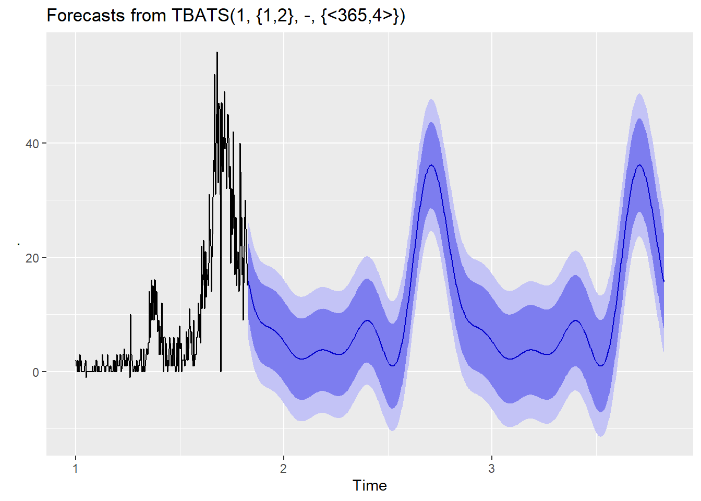

6.5 TBATs 모델
앞선 ETS 모델과 ARIMA 모델은 계절성을 처리할 수 있는 방법을 제공하지만 문제는 다중 계절성을 지는 경우이다. 예를 들어 시간별 데이터는 하루내에서도 계절성을 가질 수 있고 주간적으로도 계절성을 가질 수 있으며 월간적으로, 연간적으로도 계절성을 가질 수 있다. ETS 모델과 ARIMA 모델은 연간(frequency = 1), 분기간(frequency = 4), 월간(frequency = 12) 까지의 계절성을 지원하고 주간(frequency = 52) 이상의 계절성을 지원하지 못한다.
또한 계절성이 동적으로 변동되는 경우는 ETS, ARIMA 모델이 지원하지 못한다. 따라서 이렇게 긴 주기의 계절성을 찾아내는 모델이나 변동성을 지니는 계절성 데이터에 대한 모델을 구축해야 할 때 사용하는 모델이 tBats모델이다. tBats 모델은 Box-Cox 변환17, ARMA 에러, 추세와 계절성 컴포넌트를 사용한 지수평활 상태공간 모델이다.18
코로나 확진자 데이터의 경우 2020년 9월 경 한차례 증가가 있었다가 2020년 12월 또 한차례 증가가 발생했다. 이것을 이중 계절성으로 파악한다면 ETS나 ARIMA모형으로는 모델링이 불가하다. 하지만 tBats 모델은 다음과 같이 모델이 가능하다.
wide.covid19.by.age.ts[,2] %>% tbats() %>% forecast() %>% autoplot() ### 코로나 확진자 데이터에 대한 tBats 모델